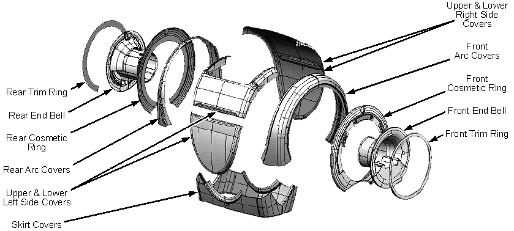

Operating Documentation
Direction 5500113, Rev# 3
Discovery MR450 1.5T Service Methods
Module Version 4.0, Version Date 3/31/10
Operating Documentation |
HDe, HDx, MR450 and MR355/MR360 magnet enclosures differ from previous enclosures. The major components are identified below.
Illustration 1: Major Enclosure Components

Use the procedure in Side Cover Removal and Installation. The procedures for removing/installing other HDe/HDx/MR450 and MR355/MR360 enclosure components can be found in the latest Service Methods documentation, which is available through the Common Documentation Library at gehealthcare.com or your local GE Healthcare Service Representative.